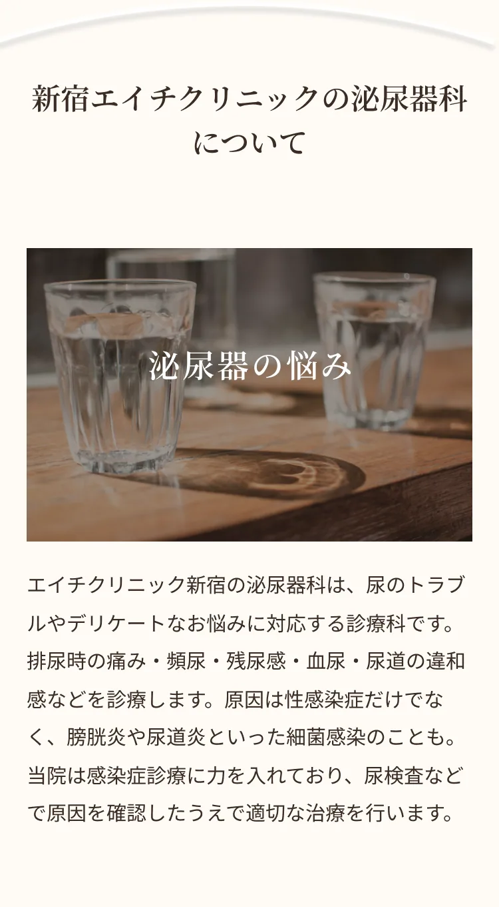
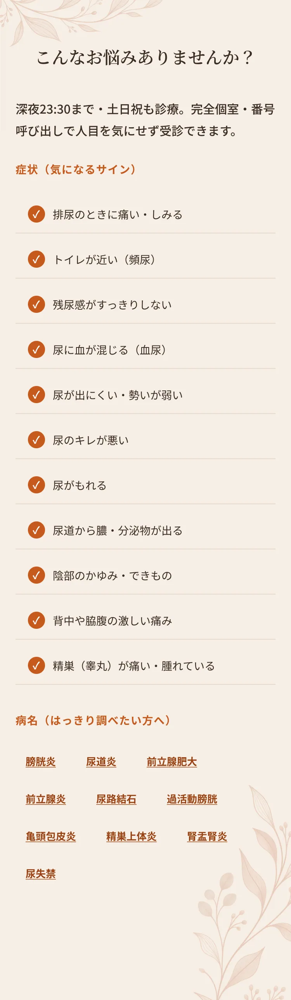
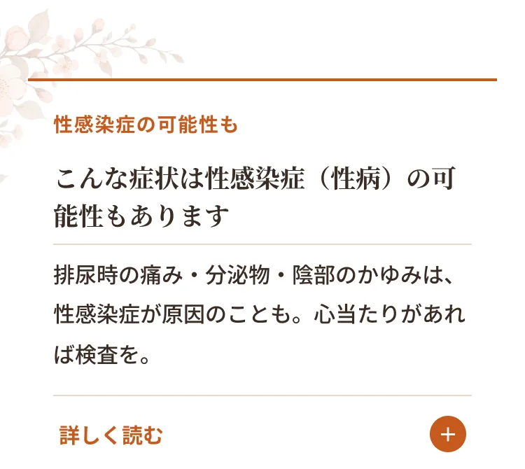
排尿時の痛みや、尿道・性器からの分泌物、陰部のかゆみ・できものなどの症状は、膀胱炎や尿道炎などの一般的な感染症だけでなく、クラミジア・淋菌・梅毒などの性感染症（性病）が原因のこともあります。性感染症は原因によって治療する薬が異なり、無症状で進行することも少なくありません。心当たりがある方や、念のため調べておきたい方は、性感染症（性病検査・治療）のページをご覧ください。当院では本名不要の匿名検査や、最短90分で結果がわかるPCR検査にも対応し、完全個室・呼び出し番号制で受診いただけます。
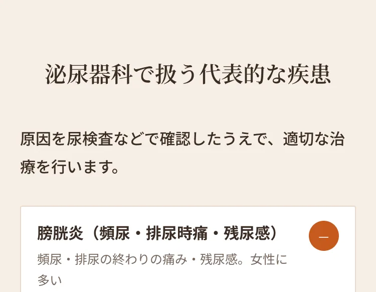
膀胱炎は、膀胱の粘膜に細菌が感染して炎症を起こす病気で、特に女性に多くみられます。女性は尿道が短く肛門に近いため、細菌が膀胱に到達しやすいことが理由です。主な症状は、トイレが近くなる頻尿、排尿の終わりごろの痛み、排尿してもすっきりしない残尿感で、炎症が強いと尿の濁りや血尿がみられることもあります。ストレスや疲れ、冷え、尿を我慢しすぎることなどが引き金になります。治療は抗菌薬の内服が中心で、多くは数日で症状が改善します。再発しやすいため、症状を感じたら早めの受診が大切です。当院では尿検査で原因を確認し、院内処方で当日お薬をお渡しできます。
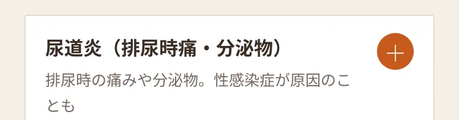
尿道炎は、尿道に細菌などが感染して炎症を起こす病気です。排尿時の痛みやしみるような違和感、尿道からの分泌物などが主な症状です。原因は一般的な細菌のほか、クラミジアや淋菌などの性感染症のこともあり、見分けには検査が必要です。性感染症が原因の場合は治療する薬が異なるため、自己判断せず医療機関での確認をおすすめします。当院では尿検査などで原因を調べ、適切な治療を行います。性感染症が心配な方は、あわせて性感染症のページもご確認ください。
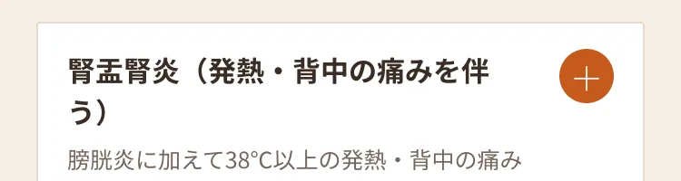
腎盂腎炎は、膀胱炎の原因となる細菌が尿管をさかのぼって腎臓にまで感染し、炎症を起こす病気です。膀胱炎の症状（頻尿・排尿時痛・残尿感）に加えて、38℃以上の発熱、背中や脇腹の痛み、吐き気・悪寒などがみられるのが特徴です。膀胱炎を放置したり、疲れや免疫低下が重なったりすると起こりやすくなります。高熱を伴う場合は早めの治療が必要で、重症の場合は入院が必要になることもあります。当院は深夜23時30分まで・土日祝も診療しているため、夜間に急な発熱と背部痛が出た際の受診先としてもご利用いただけます。状態に応じて、より高度な医療機関へご紹介する場合があります。
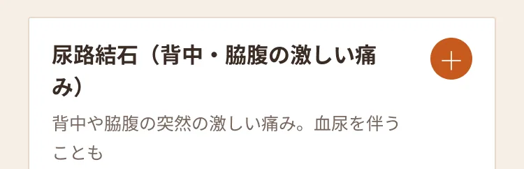
尿路結石は、腎臓から尿道までの尿の通り道に石（結石）ができる病気です。石が尿管に詰まると、背中や脇腹に突然の激しい痛みが起こり、血尿や吐き気を伴うこともあります。痛みは夜間や早朝に突然起こることも多く、脂質・糖分の多い食生活や水分不足、生活習慣などが関係するとされます。当院では尿検査などで状態を確認します。夜間の突然の激痛にも深夜23時30分まで対応しており、痛みを和らげる対応や、必要に応じて専門的な検査・治療ができる医療機関へのご紹介を行います。
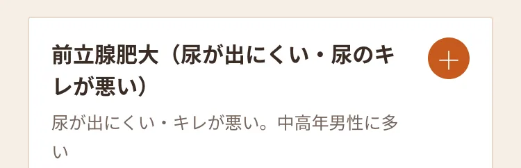
前立腺肥大は、加齢に伴って前立腺が大きくなり、尿道を圧迫することで排尿に支障が出る、中高年男性に多い病気です。尿が出にくい、尿の勢いが弱い、尿のキレが悪い、排尿に時間がかかる、残尿感がある、夜間に何度もトイレに起きるといった症状がみられます。進行すると尿が出せなくなることもあるため、気になる症状があれば早めにご相談ください。当院では問診・尿検査などで状態を確認し、必要に応じて専門的な検査・治療ができる医療機関へのご紹介も行います。
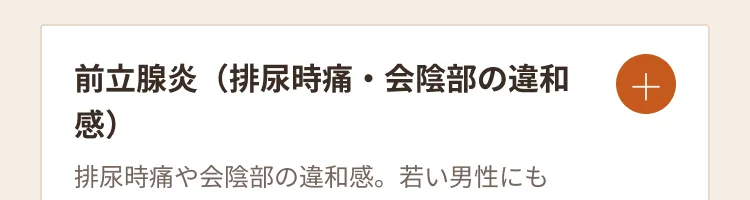
前立腺炎は、前立腺に炎症が起こる病気で、若い男性にもみられます。排尿時の痛みや頻尿、残尿感のほか、会陰部（陰嚢と肛門の間）や下腹部の違和感・痛み、発熱などがみられることがあります。細菌感染によるもののほか、長時間の座位やストレス、疲労などが関係することもあります。急性で高熱を伴う場合は早めの治療が必要です。当院では問診・尿検査などで原因を確認し、症状に応じた治療を行います。性感染症が関係することもあるため、必要に応じて検査をご案内します。
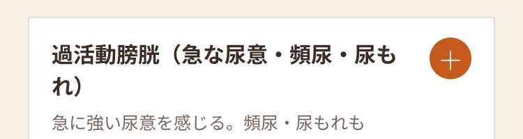
過活動膀胱は、膀胱が過敏になり、自分の意思とは関係なく収縮してしまうことで、急に強い尿意を感じる（尿意切迫感）病気です。トイレが近い（頻尿）、我慢できずにもれてしまう（切迫性尿失禁）、夜間に何度も起きるといった症状がみられ、生活の質に影響します。加齢や、前立腺肥大などが背景にあることもあります。「会議や移動中にトイレが心配」というお悩みも、治療で改善が期待できます。当院では問診・尿検査で原因を確認し、症状に応じた対応をご案内します。
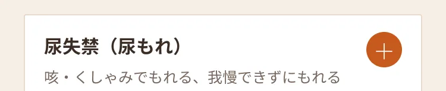
尿失禁は、自分の意思とは関係なく尿がもれてしまう状態です。咳やくしゃみ、重い物を持ったときにもれる腹圧性尿失禁（女性に多い）、急な尿意を我慢できずにもれる切迫性尿失禁、これらが混じったものなど、いくつかのタイプがあります。加齢や出産、骨盤底筋のゆるみ、過活動膀胱などが関係します。恥ずかしさから受診をためらう方も多いですが、適切な対応で改善が期待できるお悩みです。当院では完全個室・呼び出し番号制で、人目を気にせずご相談いただけます。
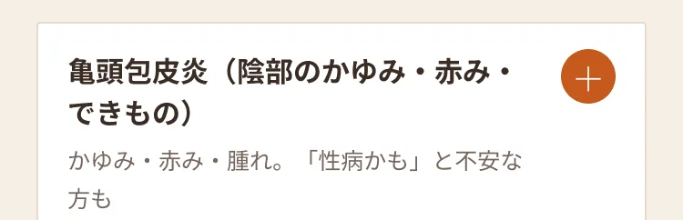
亀頭包皮炎は、亀頭と包皮に細菌や真菌（カンジダなど）が感染して炎症を起こす、男性のデリケートな部位の病気です。かゆみ、赤み、腫れ、痛み、白いカスのような分泌物、できものなどがみられます。不衛生な状態や、逆に洗いすぎ、糖尿病などが関係することがあります。「性病かもしれない」と不安になって受診される方も多いですが、性感染症とは異なる場合もあり、検査で確認できます。当院では視診・検査で原因を確認し、塗り薬や内服で治療します。性感染症が心配な方は、あわせて性感染症のページもご確認ください。
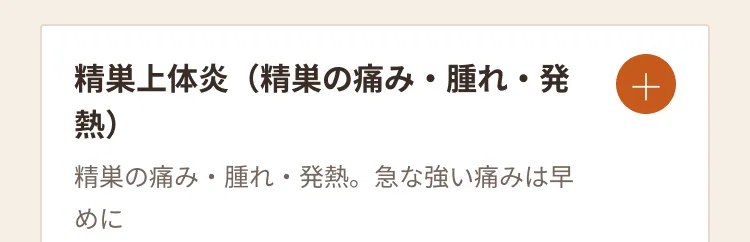
精巣上体炎は、精巣の後ろにある精巣上体に細菌が感染して炎症を起こす病気です。精巣（睾丸）の痛みや腫れ、陰嚢の熱感・赤み、発熱などがみられます。尿道からの感染や、クラミジア・淋菌などの性感染症が原因となることもあります。急に精巣が強く痛む場合は、精巣捻転など緊急の対応が必要な別の病気との見分けが重要なため、早めの受診が大切です。当院では問診・尿検査などで確認し、状態に応じて治療を行うほか、必要な場合は専門的な検査・治療ができる医療機関へご紹介します。
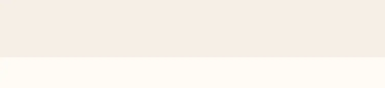
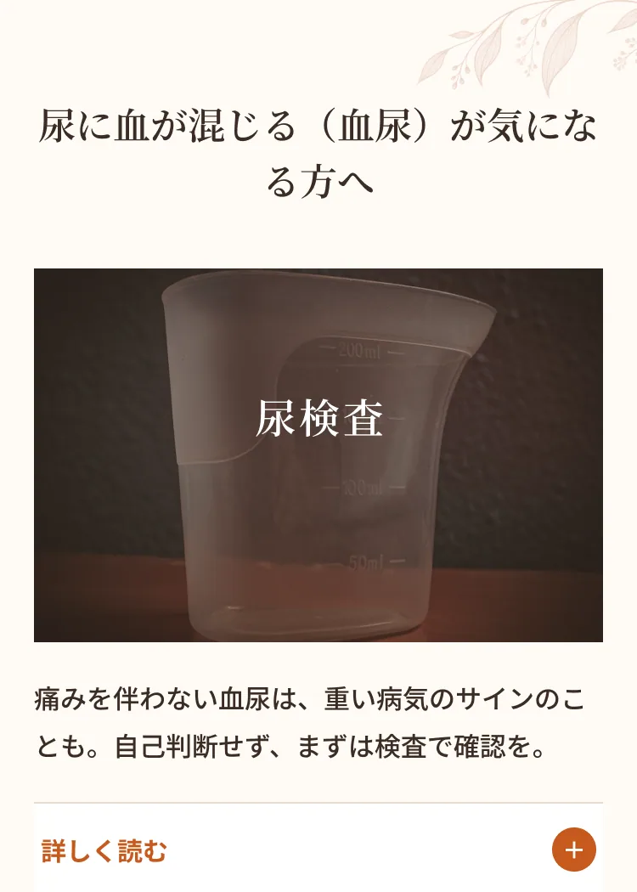
尿に血が混じる血尿は、目で見て赤いと分かるものから、検査で初めて分かるものまであります。膀胱炎や尿路結石、腎盂腎炎など、比較的よくある病気で起こることが多いですが、なかには注意が必要な場合もあります。特に、痛みを伴わない血尿は、膀胱がんなどの重い病気のサインであることもあるため、自己判断で様子を見ず、早めに受診することが大切です。当院ではまず尿検査で状態を確認し、必要に応じて追加の検査や、専門的な検査・治療ができる医療機関へのご紹介を行います。血尿に気づいたら、一度ご相談ください。

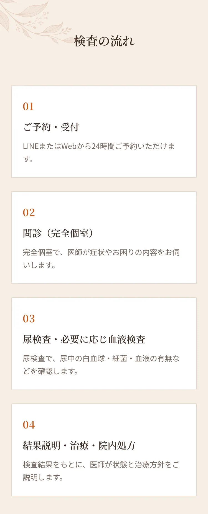
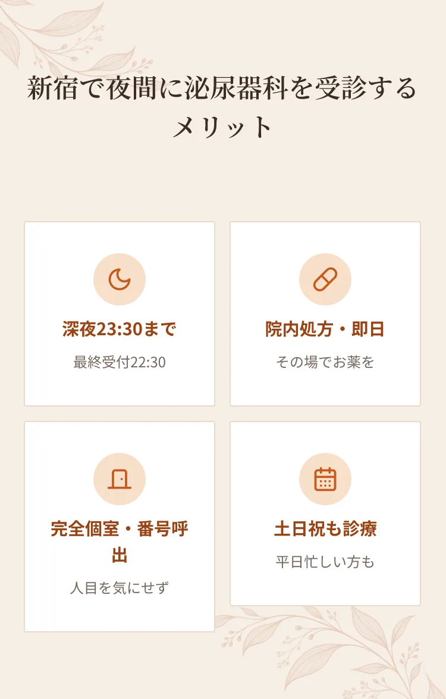
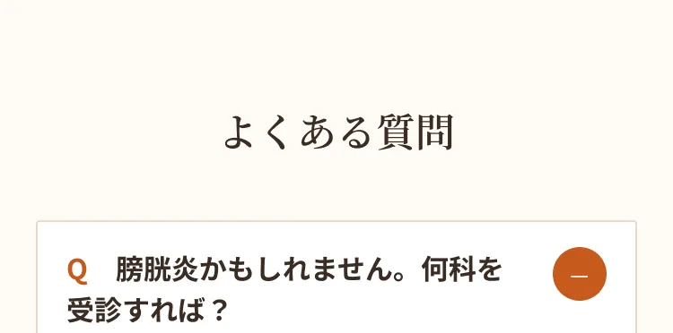
A.泌尿器科で対応します。頻尿・排尿時痛・残尿感などがあれば尿検査で確認し、当日院内処方が可能です。
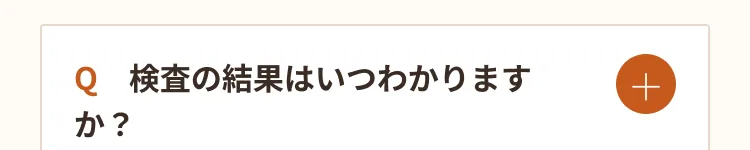
A.尿検査など即日結果が出る検査もあります。結果に応じて当日から治療を開始できる場合があります。
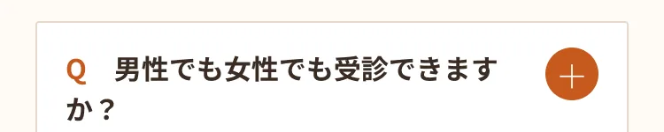
A.どちらも受診いただけます。完全個室・番号制でプライバシーに配慮しています。
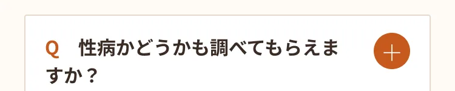
A.性感染症の検査にも対応しています。詳しくは性感染症ページをご覧ください。
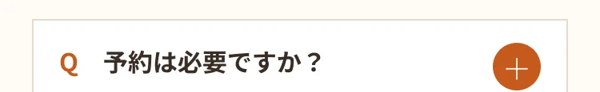
A.完全予約制です。LINEまたはWebから24時間ご予約いただけます。